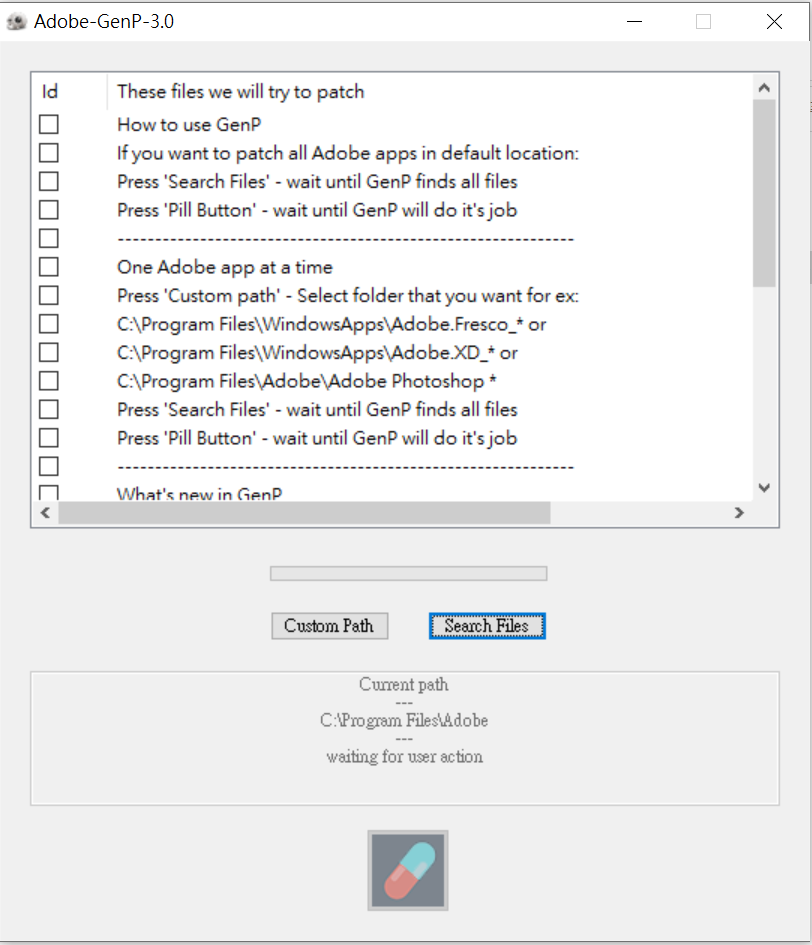

神奇的藥丸
 Adobe Premiere是一個功能強大的剪輯軟體，
因為十分專業且功能一應俱全，
但是非常吃電腦的性能，下載之前請謹慎評估。
Adobe Premiere是一個功能強大的剪輯軟體，
因為十分專業且功能一應俱全，
但是非常吃電腦的性能，下載之前請謹慎評估。
這是Mega雲端硬碟， 這一次需要用到的東西都在這裡，請先前往下載。
內包含一個破解插件，下載時可能會被瀏覽器警告，選擇保留該檔案。 保留該檔案後可能會被Windows defender 警告， 接著再去windows defender 找到這個威脅的下拉選單選取"允許在設備上運行"。 最後點擊 Premiere_Pro_Set-Up.exe執行安裝檔直到premiere安裝完成。 過程中你可以順道安裝你需要的程式 such as photoshop, after effect, illustration... 安裝軟體時需要登入adobe帳號並且可不需要啟用7天試用版。
安裝完成之後關閉所有與Adobe有關的程式及視窗 接下來打開 Adobe-GenP-3.0 這個文件夾，找到RunMe.exe， 右鍵點選“以管理員身分執行”。 接著會跳出“您是否要允許這個來自未知開發行者的App變更您的裝置”，點選“是”。  再右邊的“search file”等待這個程式搜尋完您的安裝檔案， 之後點擊下方的膠囊執行破解。破解完之後即可使用adobe 的軟體了。